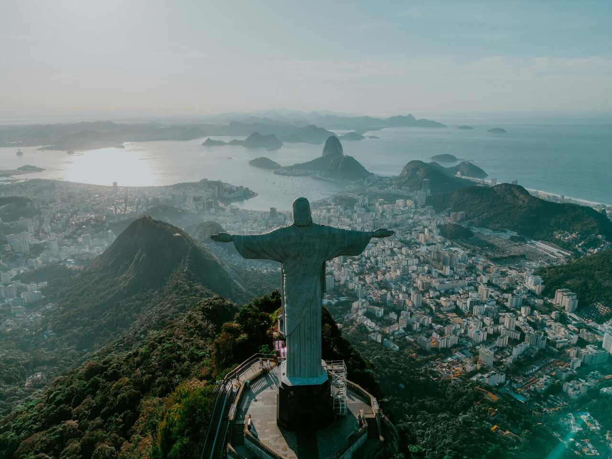
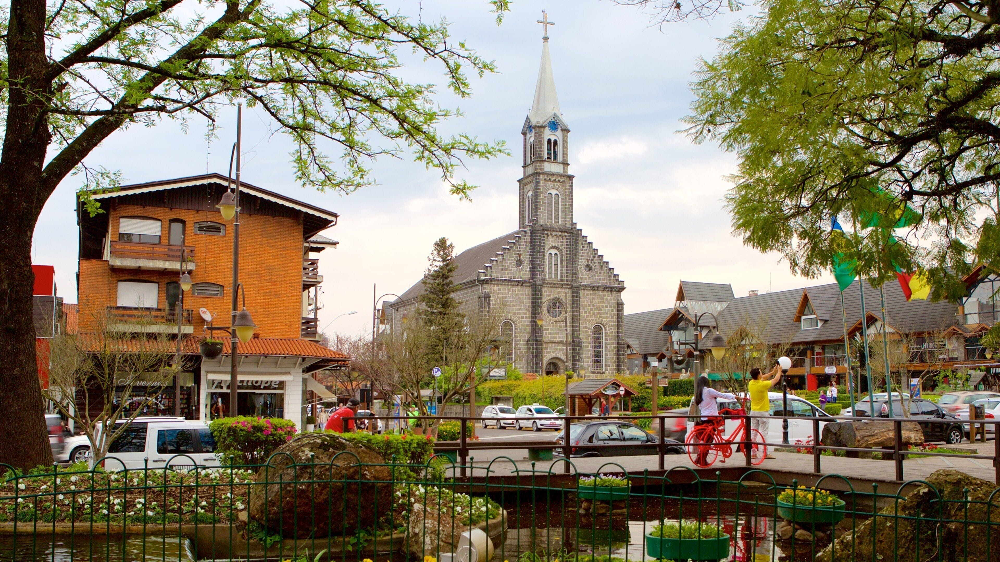
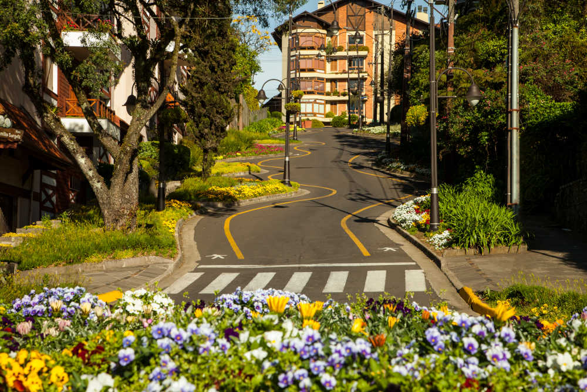
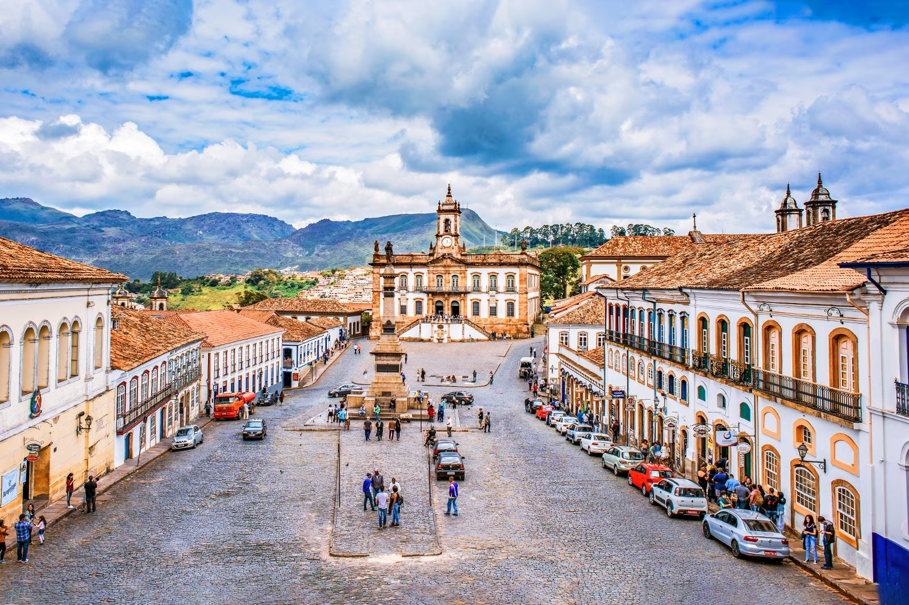
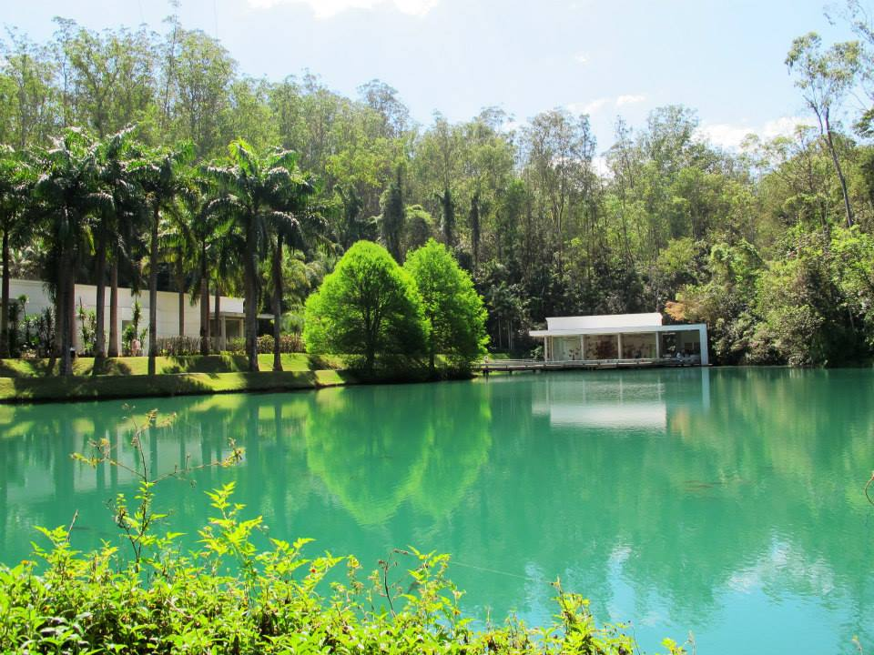
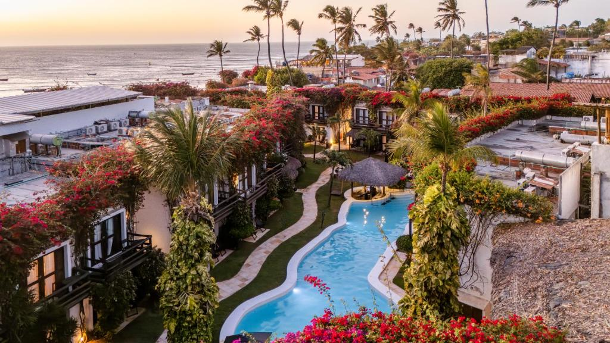
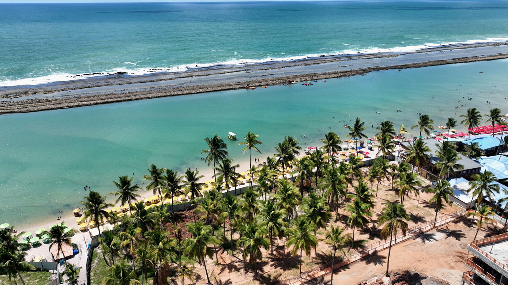

🏖️ Rio de Janeiro - RJ


O Rio de Janeiro é mundialmente famoso pelas praias de Copacabana e Ipanema, o Cristo Redentor (maior estátua art déco do mundo) e o Pão de Açúcar. Cidade do Carnaval e do samba!
❄️ Rio Grande do Sul - RS


A Serra Gaúcha tem clima europeu com Gramado e Canela. Arquitetura alemã, chocolate artesanal, fondue e o Festival de Gramado. Perfeito para o inverno!
🏔️ Minas Gerais - MG


Ouro Preto (Patrimônio Mundial UNESCO) tem igrejas barrocas e história da mineração. Inhotim é o maior museu a céu aberto do mundo com jardins incríveis. Pão de queijo quente em cada esquina!
🌴 Nordeste - PE - CE


Jericoacoara (CE): Dunas, lagoas e pôr do sol na Duna do Por do Sol. Porto de Galinhas (PE): Piscinas naturais e mar cristalino. Forró e acarajé 24h por dia!